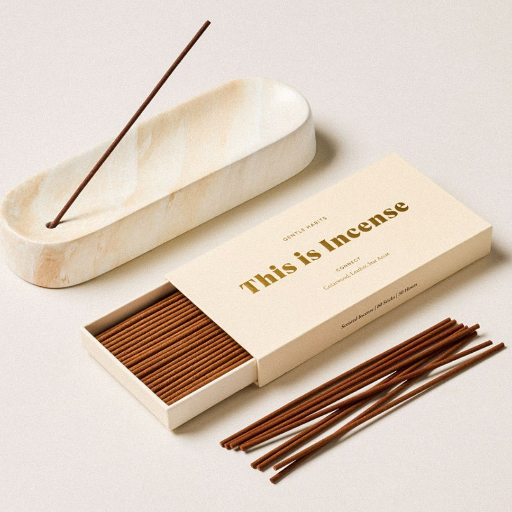

The New Collection

The Timeless Reflection
Millions of years in the making, this hand-carved marble base turns a daily routine into a luxury ritual. Its unique veining means no two mirrors are identical—it is a fingerprint of the earth.
The Marble Spoon Rest
A clean table is a sign of a master host. This solid marble rest protects your linens while adding a cold, clean aesthetic to your setting. Small, heavy, and absolutely essential.

Incense Burner
Sacred rituals deserve a stone vessel. Crafted to steady the mind and catch the ash, this burner turns drifting smoke into a sensory masterpiece. It is the weight of peace in your hand.